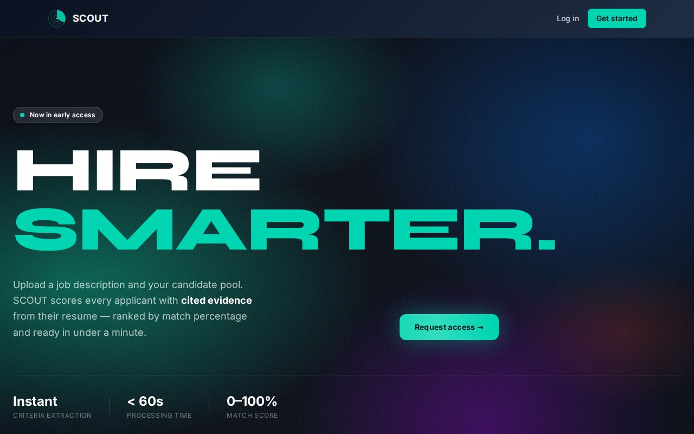

Hi, I'm Viram. I've spent years fixing technology. Now I'm building it.
I'm an Information Science student at MSU with a background in IT support. I've reset the passwords, imaged the machines, and cleared the paper jams. Along the way I learned what makes technology frustrating for the people who have to use it.
Now I'm building web apps that try to get it right from the start. This portfolio is where I share them.
A text editor, a browser, and way too many open tabs.
About me
I started working in IT in high school, through my district's internship program at a managed services company. My first real job in tech was answering help desk calls, setting up accounts, and building computers for new hires on a one-week deadline. I've been on the support side of technology ever since, first with MSU's Digital Strategies & Services team and now with MSU IT, keeping classrooms and computer labs running.
Support work teaches you something a lot of developers never see: where people get stuck. Every ticket is a small story about a system that didn't explain itself. After enough of them I started wanting to build the systems myself, and to build them so they don't generate tickets in the first place.
That's what brought me to Information Science. I'm interested in the space where people, information, and software meet. My projects come from real problems I've seen: recruiters buried in resumes, students with too many places to check for assignments, and too few good tools for test prep.
The power of the Web is in its universality. Access by everyone regardless of disability is an essential aspect.
— Tim Berners-Lee, W3C Web Accessibility Initiative launch. After years of help desk work, I believe in this more than ever: if a system only works for some people, it doesn't really work.
Quick facts
Studying
Information Science at Michigan State University
Graduating
From
Arlington Heights, Illinois, now in East Lansing, Michigan
Certifications
CompTIA A+
CompTIA IT Fundamentals+ (ITF+)
Certified Computer Support Technician, Harper College
Experience
Most of IT is sitting next to someone and figuring it out together.
Digital Classroom Support, Michigan State University IT
East Lansing, MI · to present
I give in-person support to MSU classrooms and computer labs so that class can start on time.
Run routine lab checks to keep every computer working.
Check classroom equipment such as tech carts and microphones before it's needed.
Maintain campus printers by clearing jams, replacing toner, and refilling paper.
Student Information Technology Assistant, MSU Digital Strategies & Services
East Lansing, MI · to
I gave end-user support and tracked computer maintenance for MSU Student Life & Engagement staff.
Prepared incoming machines from MSU's technology distributors and made sure they had enough disk space for daily use.
Handled password resets and new user account creation.
Kept machines current on OS updates and installed critical software.
Worked with users on help desk issues to fix software and hardware problems.
IT Generalist Intern, CCS Technology Group
Rolling Meadows, IL · D214 Internship Program · to
I worked with the Managed Services team, managing end-user accounts and building computers for new hires with a one-week turnaround.
Resolved help desk tickets with a 95% customer satisfaction (CSAT) score, mostly by phone.
Imaged machines from third-party distributors and loaded each client's critical applications.
Managed account creation and termination for client companies.
Projects
A mix of client work and personal projects. Each one starts from a real problem: recruiters buried in resumes, students juggling too many course pages, and test prep that could be better.
SCOUT: AI Resume Screening
Developer · Client project · Live in early access

The SCOUT homepage, now in early access.
I built SCOUT to help recruiters get through resumes faster. Going through resumes takes a long time, and a lot of that time goes to people who don't meet the basic requirements for the job. SCOUT handles that first hurdle so the recruiter doesn't have to.
A recruiter uploads a job description and up to 200 resumes. SCOUT figures out what the job requires, checks every resume against it, and ranks the candidates by how well they match, all in under a minute. Every score comes with a short explanation of why, so the recruiter isn't just trusting a number. The recruiter still makes the final call. SCOUT just gets them to the right people faster.
Sparxley AI Assistant
Developer · In progress
Planning a week of coursework shouldn't mean clicking through every class page.
Sparxley is an AI assistant that pulls information from MSU's learning management system, D2L, and gives students one clear, organized view of their weekly tasks and assignments.
Each course in D2L keeps its own due dates, announcements, and assignments, so getting a full picture of the week means checking every class one by one. Sparxley collects all of that into a single view.
SAT Prep Web App
Developer · In progress, built for a client
Test prep, rebuilt for the browser.
A web application that helps students prepare for the SAT. It's being developed for a client who plans to distribute it to students.
Let's connect
I'm always glad to talk with other students, developers, and anyone hiring for IT or web development roles. Whether it's a project, an internship, or a website that bugged you today, the fastest way to reach me is email.